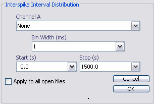

Interspike interval hgstogram (ISH)
Email: sigtool@kcl.ac.uk

Email: sigtool@kcl.ac.uk
Author: Malcolm Lidierth
Updated: June 2008
The interspike interval plots the frequency distribution of interspike intervals for an event.

Select the channels to analyze in the Channel A selector (Channel B is unused).
The bin width for the display.
© The Author and King's College London, 2008-